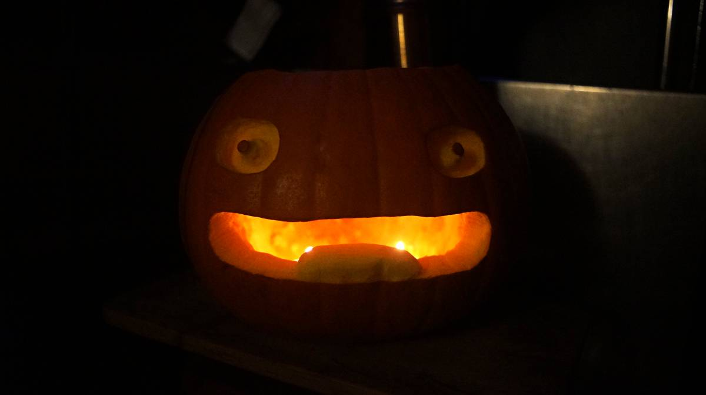
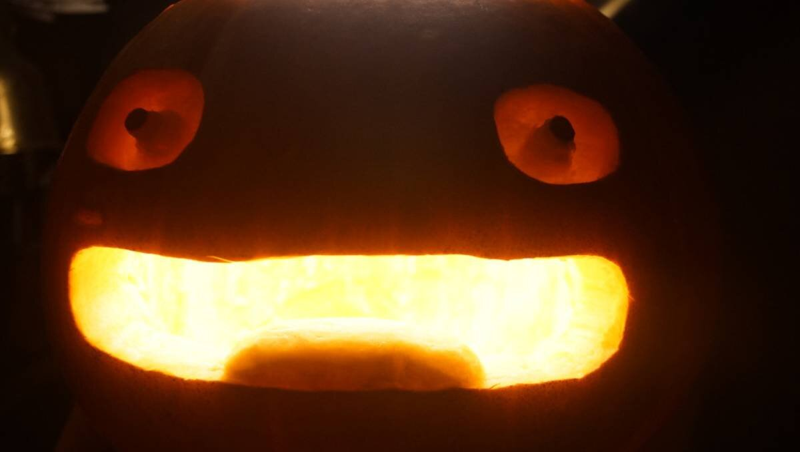
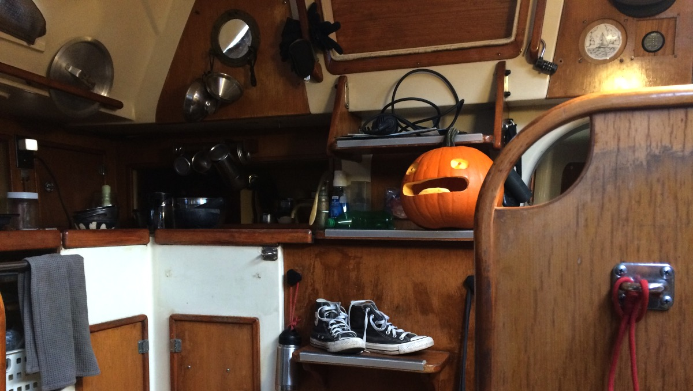

halloween pumpkins
Every Halloween we like to carve pumpkins to decorate our home.
2024. Calcifer pumpkin.
  2023. Uxn pumpkin.


2022. Ninj pumpkin.


2021. Cat Soup (nekojiru-sou) Nyatta pumpkin.

2020. Evangelion pumpkin.


Also 2020, a 100r turnip.

The best part about carving pumpkins is roasting the seeds afterwards. We wash and dry the seeds, then we pan-roast them with a bit of oil until crispy. We let them cool, and season them with salt. Delicious.